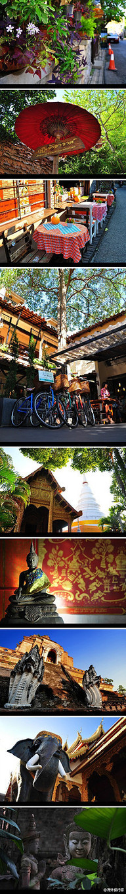
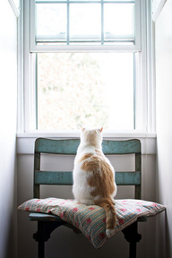

PAITING

[泰国 清迈]市内风景秀丽，遍植花草，尤以玫瑰花最为著名，有“北国玫瑰”的雅称，是个可以让人停下来细细品味的城市。正如邓丽君的一首“小城故事”解释不了她对清迈的感情，所以她将一生留在了那里。

没有人有耐心听你讲完自己的故事，因为每个人都有自己的话要说；没有人喜欢听你抱怨生活，因为每个人都有自己的苦痛；世人多半寂寞，这世界愿意倾听，习惯沉默的人，难得几个。

没有人有耐心听你讲完自己的故事，因为每个人都有自己的话要说；没有人喜欢听你抱怨生活，因为每个人都有自己的苦痛；世人多半寂寞，这世界愿意倾听，习惯沉默的人，难得几个。
细碎的流年，在风中流转成伤。用悲伤的字句祭奠逝去的年华。错过的风景在眸中黯然成伤。蓦然回首，很多曾经珍视的东西，已不知何时流失何处。无处可寻。问风风不语，问雨雨无声。陌上红尘，憧憬一场温暖的绽放。